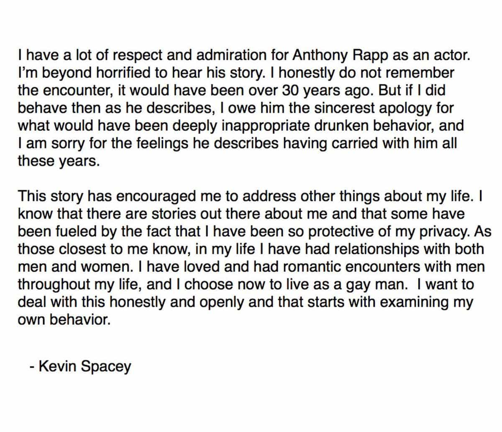

An actor from the SJW-themed Star Trek: Discovery, Anthony Rapp, has effectively accused Kevin Spacey of being a pedophile. In response, Spacey did not deny the allegation that he sexually manhandled a 14-year-old Rapp in the 1980s. Instead, he decided to come out as gay to deflect attention away from any attempted molestation of a child. He also blamed heavy inebriation for what might have taken place when he was 26. To boot, no one has adequately explained why the teenaged Rapp found himself in Spacey’s apartment for a party with alcohol.
Kevin Spacey’s name had already been thrown around as a potential sexual abuser for years. Only weeks ago, journalist Heather Unruh said that he sexually assaulted someone she knows in the past. After the Harvey Weinstein story broke, there seemed to be a severe reluctance in the media to go after Spacey. In fact, multiple outlets refused to name him “for legal reasons,” despite every woman and her dog getting fawning attention for their “truths” about Weinstein.
For all his power in Hollywood, Harvey Weinstein was a backroom heavyweight, not a front-and-center star. People like him are easily sacrificed. Yet when men like Kevin Spacey are in the firing line, it puts an even more public face to Hollywood’s degeneracy and further undermines any pretense that celebrities are the arbiters of moral virtue. An actor’s homosexuality, which normally protects them from the scrutiny a heterosexual man would receive, only compounds any sexual abuse crisis in Tinseltown. When straight men can’t be the whipped donkeys, panic erupts.
Here is Kevin Spacey’s “mea culpa”:
“I do not remember the encounter” and “I choose now to live as a gay man” are the most telling parts of Spacey’s words. He cannot remember if he tried to sexually seduce and therefore tried to statutorily rape a 14-year-old boy. At the very least, he could have denied attempted sexual activity with a child. But he didn’t. The bigger talking point is meant to be his “bravery” in publicly identifying as a gay man.
What can we possibly make of this? And what other “stories” are “out there” about him?
“My dad was a neo-Nazi and he raped me!”
Gay man accused of trying to molest an underage boy? Use your neo-Nazi dad to absolve yourself. Results guaranteed!
As Kevin Spacey goes into damage control, his brother Randall Fowler, a Rod Stewart impersonator, is seeking to shift the conversation to their neo-Nazi father. Thomas Fowler was a member of the American Nazi Party and is thus a very easy target, especially now that he is dead. I would not be surprised if Spacey purposely had Randall wheeled out as a means of salvaging his acting career.
Just as Spacey linked the alleged pedophilia towards Rapp with his seemingly tortured life as a badly closeted gay man, Randall Fowler is suggesting there’s a “predator gene” that makes people sexually abuse others. Kevin Spacey has no children that we know of, nor does his brother.
We should call this the Todd Nickerson defense. The movement to partially or fully legitimize pedophilia as an “illness” hit a snag some months ago, leading to Salon deleting its pro-pederasty articles. It might make a resurgence with the present turmoil engulfing Kevin Spacey, particularly if more gay men in Hollywood are accused of sexually dealing with underage boys.
The Spacey pedophilia scandal will probably help protect other pedophiles in Hollywood
Over ten years ago on Family Guy: “Help! I’ve escaped from Kevin Spacey’s basement!”
Spacey’s own juxtaposition of his homosexuality with the Anthony Rapp allegation presents a very difficult situation for fellow gays in Hollywood. We should expect that any other figures suspected of misbehavior concerning underage boys, such as director Bryan Singer, will be greatly shielded in the coming weeks.
Remember, the real boogeyman in the world is healthy, heterosexual male behavior. It’s a “hate crime” to ask for a woman’s phone number in England if she’s not attracted to you. Across the Atlantic, men learning to become accountants, teachers, doctors, and lawyers at American colleges are supposedly the people most likely to rape girls. Anything and everything to restrict non-dangerous expressions of male sexuality will be pursued, whilst real-life pederasty can be blamed on a bad childhood or the pain of being gay.
Whatever happens in the coming weeks, let’s all at least agree that Middle America no longer even has to pretend to take lessons in political or moral character from Hollywood.
Read More: Why Did Rose McGowan Attack Harvey Weinstein For Sexual Harassment But Defend A Pedophile Director?